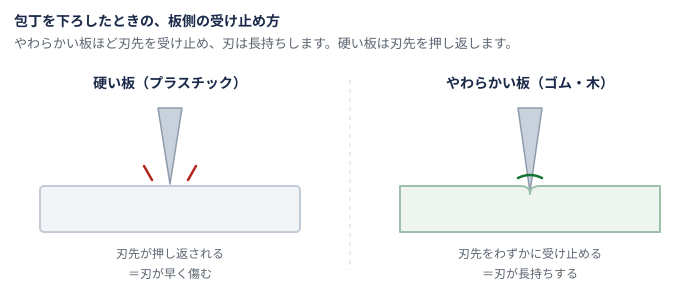
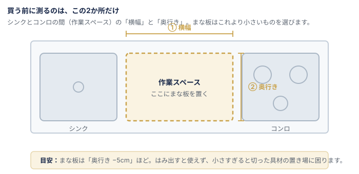

まな板は数百円から2万円まであります。それでいて「どれも同じ板」と思われがちで、 値段だけで選んで後悔しやすい道具です。
違いを生んでいるのは、ほとんど素材です。 素材が決まれば、包丁の傷み方も洗い方も寿命も決まります。あとは大きさと厚みだけです。
「刃あたり」は、包丁を下ろしたときの手ごたえのことです。硬い板ほど刃は早く傷みます。

| プラスチック | ゴム（合成ゴム） | 木 | エラストマー | |
|---|---|---|---|---|
| 刃あたり | 硬め | やわらかい | やわらかい | やわらかい |
| 水の吸いにくさ | 吸わない | ほぼ吸わない | 吸う | 吸わない |
| 食洗機 | 対応品が多い | 製品により可否が分かれる | 基本的に不可 | 製品により |
| 漂白剤 | 使える | 製品の指示に従う | 避ける | 製品の指示に従う |
| 重さ | 軽い | 重い | 厚みによる | 軽い |
| 傷の残りやすさ | 残りやすい | 戻りやすい | 削り直せる | 戻りやすい |
| 寿命の考え方 | 傷が増えたら交換 | 表面を削って再生できる | 削り直して長く使う | 傷が増えたら交換 |
| 価格帯の目安 | 数百円〜 | 数千円〜 | 千円台〜2万円超 | 千円台〜 |
いちばん普及している素材です。水を吸わないので乾きが早く、 漂白剤も使え、食洗機に入れられる製品が多い。衛生面で扱いやすいのが最大の利点です。
弱点は、刃が傷みやすいこととついた傷が戻らないこと。 傷の溝には汚れが残るので、深い傷が目立ったら交換時期です。消耗品と割り切る素材です。
業務用の厨房で広く使われている素材です。刃あたりがやわらかいのに、 木と違って水をほとんど吸いません。切りやすさと衛生面の両方を取れるのが強みです。
弱点は重いこと。同じ大きさなら木やプラスチックよりずっしりします。 据えて使うなら安定しますが、片手で持ち上げて洗うにはつらい。商品ページの重量欄を必ず見てください。
刃あたりがよく、使っていて気持ちのいい素材です。 削り直せるので、手入れさえすれば10年単位で使えます。
弱点は水を吸うこと。使ったらすぐ洗い、立てて乾かす手間が要ります。 食洗機は使えず、漂白剤も避けます。この手間を面倒と感じる人には向きません。
やわらかく軽い素材です。丸めて水切りに流し込める製品もあり、調理台が狭い家と相性がいい。
弱点は、薄いものだと切るときに動きやすいこと。滑り止めの有無を見てください。

| よくある失敗 | どうすればよかったか |
|---|---|
| 調理台に載らなかった | 買う前に調理台の作業スペースを測る。奥行きより5cmほど小さいものを選ぶ。 |
| 重すぎて洗うのが苦痛 | ゴム製は重い。商品ページの「重量」を必ず見る。片手で扱いたいなら1kg前後を目安に。 |
| 木製が黒ずんだ・反った | 濡れたまま放置しない、片面だけ使わない（両面を均等に使うと反りにくい）、直射日光で急激に乾かさない。 |
| 食洗機に入らなかった | 「食洗機対応」は素材の話。自宅の庫内寸法と、入れる向きを先に確認する。 |
| 安いものを何度も買い替えた | プラスチックは消耗品と割り切るか、削り直せるゴム・木に一度移るか。長く使う前提なら後者が結果的に安いこともある。 |
素材ごとに、得意なメーカーが分かれています。社名から公式サイトへ飛べます。
| メーカー | 主な素材 | 特徴 |
|---|---|---|
| パーカーアサヒ | 合成ゴム | ゴム加工の技術を生かした「アサヒクッキンカット」で知られます。業務用の厨房で広く使われている定番です。 |
| 土佐龍 | 木（四万十ひのき） | 高知県須崎市。1970年創業。四万十川流域のひのきを使った木製まな板・木製キッチン用品をつくっています。 |
| 貝印 | 樹脂・エラストマー ほか | 包丁で知られる刃物・調理器具の総合メーカー。包丁とあわせて選べるのが強みです。 |
| パール金属 | 樹脂・エラストマー ほか | 新潟県三条市。1967年設立のキッチン用品メーカーで、手に取りやすい価格帯の品ぞろえが豊富です。 |
※ 並びは本文で扱った素材の順です。
素材が決まれば、あとは大きさと重さで絞るだけです。
プラスチック製を探す ゴム製を探す 木製を探す エラストマー製を探す